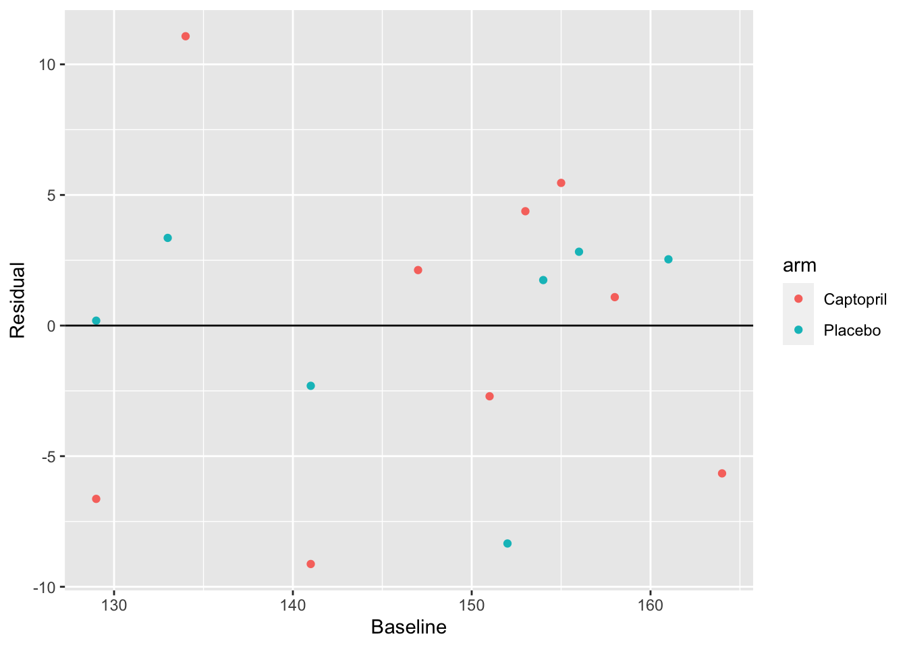

5 Analyzing RCT data
We’re now in the post-trial stage. The trial has been run, and we have lots of data to analyze to try to assess what effect the treatment or intervention has had. In general we will use the notation \(\tau\) to denote the treatment effect.
We’ll first focus on the scenario where the trial outcome is measured on a continuous scale, and then we’ll go on to look at other types of data.
Example 5.1 To illustrate the theory and methods, we’ll use an example dataset from Hommel et al. (1986) (this example is also used by Matthews (2006)). The data involves a trial of 16 diabetes patients, and focusses on a drug (Captopril) that may reduce blood pressure. This is important, since for those with diabetes, high blood pressure can exacerbate kidney disease (specifically diabetic nephropathy, a complication of diabetes). To participate in the trial, people had to be insulin-dependent and already affected by diabetic nephropathy. In the trial, systolic blood pressure was measured before participants were allocated to each trial arm, and then measured again after one week on treatment. A placebo was given to the control group, so that all participants were blinded.
The baseline and outcome blood pressure measurements are shown below, in mmHg. We see that nine participants were assigned to the treatment arm (Captopril) and the remaining seven to the placebo group. Hommel et al. (1986) say that the patients were ‘randomly allocated’ to their group.
| Patient (ID) | Baseline (B) | Outcome at 1 week (X) | Trial Arm |
|---|---|---|---|
| 1 | 147 | 137 | Captopril |
| 2 | 129 | 120 | Captopril |
| 3 | 158 | 141 | Captopril |
| 4 | 164 | 137 | Captopril |
| 5 | 134 | 140 | Captopril |
| 6 | 155 | 144 | Captopril |
| 7 | 151 | 134 | Captopril |
| 8 | 141 | 123 | Captopril |
| 9 | 153 | 142 | Captopril |
| 1 | 133 | 139 | Placebo |
| 2 | 129 | 134 | Placebo |
| 3 | 152 | 136 | Placebo |
| 4 | 161 | 151 | Placebo |
| 5 | 154 | 147 | Placebo |
| 6 | 141 | 137 | Placebo |
| 7 | 156 | 149 | Placebo |
This is very small dataset, and so in that respect it is quite unusual, but its structure is similar to many other trials.
We will build up from the simplest type of analysis to some more complicated / sophisticated approaches.
5.1 Confidence intervals and P-values
Because the randomization process should produce groups that are comparable, we should in principle be able to compare the primary outcome (often referred to as \(X\)) between the groups.
Example 5.2 Summary statistics of the outcome for each group are shown below.
| Sample Size | Mean (mmHg) | SD (mmHg) | SE of mean (mmHg) | |
|---|---|---|---|---|
| Captopril | 9 | 135.33 | 8.43 | 2.81 |
| Placebo | 7 | 141.86 | 6.94 | 2.62 |
We see that the difference in mean outcome (systolic blood pressure) between the two groups is \(141.86 - 135.33 = 6.53 \text{mmHg}\). Clearly overall there has been some reduction in systolic blood pressure for those in the Captopril arm, but how statistically sound is this as evidence? It could be that really (for the hypothetical population) there is no reduction, and we have just been ‘lucky’.
The variances within the two groups are fairly close, so we can use the pooled estimate of standard deviation:
\[ s_p = \sqrt{\frac{\sum\limits_{i=1}^N\left(n_i-1\right)s_i^2}{\sum\limits_{i-1}^N\left(n_i-1\right)}}. \]
In our case
\[ \begin{aligned} s_p&= \sqrt{\frac{8\times{8.43^2} + 6 \times{6.94^2}}{8+6}}\\ & = 7.82\text{ mmHg.} \end{aligned} \] This enables us to do an independent two-sample \(t\)-test, and we can find the \(t\) statistic
\[ \begin{aligned} t & = \frac{\bar{X_1} - \bar{X_2}}{s_p\sqrt{\frac{1}{n_1} + \frac{1}{n_2}}}\\ & = \frac{6.53}{7.82\sqrt{\frac{1}{9} + \frac{1}{7}}} \\ & = 1.65. \end{aligned} \] Note that here we are taking the placebo group to be group 1, and the Captopril group to be group 2.
Under the null hypothesis that the mean systolic blood pressure at the end of the week of treatment/placebo is the same in both groups, this value should have a \(t\) distribution with 14 degrees of freedom (\(n_i-1\) for each group).

The dashed line is at \(t=1.65\), and the red shaded areas show anywhere ‘at least as extreme’. We can find the area (ie. the probability of anything at least as extreme as our found value) in R by
## [1] 0.1211902This is the value we know as ‘the P value’. We see that in this case our results are not statistically significant (at the 0.10 level), under this model.
5.1.0.1 What do we do with this outcome?
The outcome of this Captopril study is in some ways the worst case scenario. The difference in means is large enough to be compelling, but our dataset is too small for it to be statistically significant, and so we can’t confidently conclude that Captopril has any effect on blood pressure. However, we also can’t say that there is no effect. This is exactly the sort of scenario we hoped to avoid when planning our study.
One way to reframe the question is to consider the range of treatment effects that are compatible with our trial data. That is, we find the set
\[\left\lbrace \tau \mid \frac{\lvert \bar{x}_1 - \bar{x}_2 - \tau \rvert}{s\sqrt{n_1^{-1} + n_2^{-1}}} \leq t_{n_1+n_2-2;\,0.975} \right\rbrace, \] which contains all possible values of treatment effect \(\tau\) that are compatible with our data. That is, suppose the true treatment effect is \(\tau^*\), and we test the hypothesis that \(\tau = \tau^*\). For all values of \(\tau^*\) inside this range, our data are not sufficiently unlikely to reject the hypothesis at the 0.05 level. However, for all values of \(\tau^*\) outside this range, our data are sufficiently unlikely to reject that hypothesis. We can rearrange this to give a 95% confidence interval for \(\tau\),
\[\left\lbrace \tau \mid \bar{x}_1 - \bar{x}_2 - t_{n_1+n_2-2;\,0.975}\,s\sqrt{n_1^{-1} + n_2^{-1}} \leq \tau \leq \bar{x}_1 - \bar{x}_2 + t_{n_1+n_2-2;\,0.975}\,s\sqrt{n_1^{-1} + n_2^{-1}} \right\rbrace \]
Example 5.3 Continuing our example, we have
\[\left\lbrace \tau \mid \frac{\lvert 6.53 - \tau \rvert}{7.82\sqrt{\frac{1}{7} + \frac{1}{9}}} \leq t_{14;0.975} = 2.145 \right\rbrace \]
Here, \(t_{14;0.975} = 2.145\) is the \(t\)-value for a significance level of \(0.05\), so if we were working to a different significance level we would change this.
Rearranging as above, this works out to be the interval
\[ -1.92 \leq \tau \leq 14.98. \]
Notice that zero is in this interval, consistent with the fact that we failed to reject the null hypothesis.
Some things to note
- We can compute this confidence interval whether or not we failed to reject the null hypothesis that \(\tau=0\), and for significance levels other than 0.05.
- In most cases, reporting the confidence interval is much more informative than simply reporting the \(P\)-value. In our Captopril example, we found that a negative treatment effect (ie. Captopril reducing blood pressure less than the placebo) of more than 2 mmHg was very unlikely, whereas a positive effective (Captopril reducing blood pressure) of up to 15 mmHg was plausible. If Captopril were inexpensive and had very limited side effects (sadly neither of which is true) it may still be an attractive drug.
- These confidence intervals are exactly the same as you have learned before, but we emphasise them because they are very informative in randomised controlled trials (but not so often used!).
At the post trial stage, when we have data, the confidence interval is the most useful link to the concept of power, which we thought about at the planning stage. Remember that the power function is defined as
\[\psi \left(\tau\right) = P\left(\text{Reject }H_0\mid \tau\neq 0\right),\] that is, the probability that we successfully reject \(H_0\) (that \(\tau=0\)) given that there is a non-zero treatment effect \(\tau\neq 0\). This was calculated in terms of the theoretical model of the trial, and in terms of some minimum detectable effect size \(\tau_M\) that we wanted to be able to correctly detect with probability \(1-\beta\) (the power). Sometimes people attempt to re-calculate the power after the trial, to detect whether the trial was underpowered. However, now we have actual data. If we failed to reject \(H_0\) and \(\tau_M\) is in the confidence interval for \(\tau\), then that is a good indication that our trial was indeed underpowered.
5.2 Using baseline values
In our example above, our primary outcome variable \(X\) was the systolic blood pressure of each participant at the end of the intervention period. However, we see in Table 5.1 that we also have baseline measurements: measurements of systolic blood pressure for each patient from before the intervention period. Baseline measurements are useful primarily for two reasons:
- They can be used to assess the balance of the design.
- They can be used in the analysis.
We will demonstrate these by returning to our Captopril example.
Example 5.4 Firstly, we use the baseline systolic blood pressure to assess balance. The placebo group has a mean of 146.6 mmHg and an SD of 12.3 mmHg, whereas the Captopril group has mean 148.0 mmHg, SD 11.4 mmHg. While these aren’t identical, they are sufficiently similar to think they wouldn’t affect our analysis. In a study this small there is likely to be some difference.
Secondly, since we are interested in whether the use of Captopril has reduced blood pressure for each individual, and these individuals had different baseline values, it makes sense to compare not just the outcome but the difference from baseline to outcome for each individual. We can see individual data in Table 5.3 and summary statistics in Table 5.4.
| Patient (ID) | Baseline (B) | Outcome at 1 week (X) | Trial Arm | Difference |
|---|---|---|---|---|
| 1 | 147 | 137 | Captopril | -10 |
| 2 | 129 | 120 | Captopril | -9 |
| 3 | 158 | 141 | Captopril | -17 |
| 4 | 164 | 137 | Captopril | -27 |
| 5 | 134 | 140 | Captopril | 6 |
| 6 | 155 | 144 | Captopril | -11 |
| 7 | 151 | 134 | Captopril | -17 |
| 8 | 141 | 123 | Captopril | -18 |
| 9 | 153 | 142 | Captopril | -11 |
| 1 | 133 | 139 | Placebo | 6 |
| 2 | 129 | 134 | Placebo | 5 |
| 3 | 152 | 136 | Placebo | -16 |
| 4 | 161 | 151 | Placebo | -10 |
| 5 | 154 | 147 | Placebo | -7 |
| 6 | 141 | 137 | Placebo | -4 |
| 7 | 156 | 149 | Placebo | -7 |
| Sample Size | Mean (mmHg) | SD (mmHg) | SE of mean (mmHg) | |
|---|---|---|---|---|
| Captopril | 9 | -12.67 | 8.99 | 3.00 |
| Placebo | 7 | -4.71 | 7.91 | 2.99 |
Now we can perform our test as before, in which case we find
\[ t = \frac{-4.71 - (-12.67)}{8.54\sqrt{\frac{1}{7}+\frac{1}{9}}} = 1.850 \] where 8.54 is the pooled standard deviation (as before). Under the null distribution of no difference, this has a \(t\)-distribution with 14 degrees of freedom, and so we have a \(P\)-value of 0.086. Our 0.95 confidence interval is
\[ -4.71 - (-12.67) \pm t_{14;\,0.975}\times 8.54\sqrt{\frac{1}{7}+\frac{1}{9}} = \left[-1.3,\,17.2\right].\] We see that taking into account the baseline values in this way has slightly reduced the \(P\)-value and shifted the confidence interval slightly higher. Though at the \(\alpha = 0.05\) level we still don’t have significance.
We will now look into why the confidence interval and \(P\)-value changed in this way, before going on to another way of taking into account the baseline value.
Let’s label the baseline measurement for each group \(B_1\) and \(B_2\), and the outcome measurements \(X_1,\,X_2\), where we will take group 1 to be the placebo group and group 2 to be the treatment group. Because all participants have been randomised from the same population, we have
\[\operatorname{E}\left(B_1\right) = \operatorname{E}\left(B_2\right) = \mu_B.\] Assuming some treatment effect \(\tau\) (which could still be zero) we have
\[ \begin{aligned} \operatorname{E}\left(X_1\right) & = \mu\\ \operatorname{E}\left(X_2\right) & = \mu + \tau. \end{aligned} \] Usually we will assume that
\[\operatorname{Var}\left(X_1\right) = \operatorname{Var}\left(X_2\right) = \operatorname{Var}\left(B_1\right) = \operatorname{Var}\left(B_2\right) = \sigma^2,\] and this is generally fairly reasonable in practice.
Notice that for the two analyses we have performed so far (comparing outcomes and comparing differences) we have
\[ \begin{aligned} \operatorname{E}\left(X_2\right) - \operatorname{E}\left(X_1\right) & = \left(\mu + \tau\right) - \mu = \tau\\ \operatorname{E}\left(X_2 - B_2\right) - \operatorname{E}\left(X_1 - B_1\right) & = \left(\mu - \mu_B + \tau\right) - \left(\mu - \mu_B\right) = \tau, \end{aligned} \] that is, both are unbiased estimators of \(\tau\).
However, whereas the first is based on data with variance \(\sigma^2\), the second has
\[ \begin{aligned} \operatorname{Var}\left(X_2-B_2\right) & = \operatorname{Var}\left(X_2\right) + \operatorname{Var}\left(B_2\right) - 2\operatorname{cov}\left(X_2,B_2\right)\\ & = \sigma^2 + \sigma^2 - 2\rho\sigma^2 \\ & = 2\sigma^2\left(1-\rho\right), \end{aligned} \] where \(\rho\) is the true correlation between \(X\) and \(B\), and is assumed to be the same in either group. Therefore, if \(\frac{1}{2}<\rho\leq 1\) there will be a smaller variance when comparing differences. However, if \(0\leq\rho<\frac{1}{2}\), the variance will be smaller when comparing outcome variables.
Intuitively, this seems reasonable: if the correlation between baseline and outcome measurements is very strong, then we can remove some of the variability between participants by taking into account their baseline measurement. However, if the correlation is weak, then by including the baseline in the analysis we are essentially just introducing noise.
For our Captopril example, the sample correlation between baseline and outcome is 0.63 in the Captopril group and 0.80 in the Placebo group. This fits with the \(P\)-value having reduced slightly.
5.3 Analysis of covariance (ANCOVA)
In the previous section we based our analysis on the baseline values being statistically identical draws from the underlying distribution, and therefore having the same expectation and variance.
However, although this is theoretically true, in real life trials there will be some imbalance in the baseline measurements for the different treatment arms. We can see this in our Captopril example, in Figure 5.1.2.1
Figure 5.1: Baseline measurements from the Captopril trial Hommel et al. (1986).
The baseline measurements are not identical in each group. Indeed, we saw earlier that the means differ by 1.4 mmHg. Although this isn’t a clinically significant difference, or a large enough difference to make us doubt the randomisation procedure, it is still a difference.
The basic principle of ANCOVA is that if there is some correlation between the baseline and outcome measurements, then if the baseline measurements differ, one would expect the outcome measurements to differ, even if there is no treatment effect (ie. if \(\tau=0\)). Indeed, how do we decide how much of the difference in outcome is down to the treatment itself, and how much is simply the difference arising from different samples?
This issue arises in many trials, particularly where there is a strong correlation between baseline and outcome measurements.
5.3.1 The theory
Suppose the outcome for a clinical trial is \(X\) and the baseline is \(B\). \(X\) has mean \(\mu\) in the control group (C) and mean \(\mu+\tau\) in the test group (T), and as usual our aim is to determine the extent of \(\tau\), the treatment effect. We suppose also that \(X\) has variance \(\sigma^2\) in both groups.
The same quantity is measured at the start of the trial, and this is the baseline \(B\), which we can assume to have true mean \(\mu_B\) in both groups (because of randomisation) and variance \(\sigma^2\). We also assume that the true correlation between \(B\) and \(X\) is \(\rho\) in each group. Finally, we assume that both treatment groups are of size \(N\).
We therefore have \(2N\) patients, and so we observe baseline measurements \(b_1,\,b_2,\ldots,b_{2N}\). Given these values, we have
\[ \begin{aligned} \operatorname{E}\left(X_i\mid{b_i}\right) &= \mu + \rho\left(b_i - \mu_B\right)\text{ in the control group}\\ \operatorname{E}\left(X_i\mid{b_i}\right) &= \mu +\tau + \rho\left(b_i - \mu_B\right)\text{ in the test group.} \end{aligned} \]
From this, we find that
\[\begin{equation} \operatorname{E}\left(\bar{X}_T - \bar{X}_C\mid{\bar{b}_T,\,\bar{b}_C}\right) = \tau + \rho\left(\bar{b}_T - \bar{b}_C\right). \tag{5.1} \end{equation}\] That is, if there is a difference in the baseline mean between the control and test groups, then the difference in outcome means is not an unbiased estimator of the treatment effect \(\tau\). Assuming \(\rho>0\) (which is almost always the case) then if \(\bar{b}_T>\bar{b}_C\) the difference in outcome means overestimates \(\tau\). Conversely, if \(\bar{b}_T<\bar{b}_C\), the difference in outcome means underestimates \(\tau\). The only situation in which the difference in outcome means is an unbiased estimator is when \(\rho=0\), however this is not common in practice.
Comparing the difference between outcome and baseline, as we did in 5.2, does not solve this problem, since we have
\[\operatorname{E}\left[\left(\bar{X}_T - \bar{b}_T\right) - \left(\bar{X}_C - \bar{b}_C\right)\mid{\bar{b}_T,\,\bar{b}_C}\right] = \tau + \left(\rho-1\right)\left(\bar{b}_T - \bar{b}_C\right),\] which is similarly unbiased (unless \(\rho=1\), which is never the case).
Notice, however, that if we use as our estimator
\[\left(\bar{X}_T - \bar{X}_C\right) - \rho \left(\bar{b}_T - \bar{b}_C\right)\] then, following from Equation (5.1) we have
\[\operatorname{E}\left[\left(\bar{X}_T - \bar{X}_C\right) - \rho \left(\bar{b}_T - \bar{b}_C\right)\mid{\bar{b}_T,\,\bar{b}_C}\right] = \tau + \rho\left(\bar{b}_T - \bar{b}_C\right)- \rho\left(\bar{b}_T - \bar{b}_C\right) = \tau. \]
5.3.2 The practice
In the previous section we established an unbiased estimate of the treatment effect that takes into account the baseline measurements. However, we can’t use it as a model, because there are a few practical barriers:
- Our estimate for \(\tau\) relies on the correlation \(\lambda\), which is unknown
- In real life, the groups are unlikely to have equal size and variance, so ideally we’d lose these constraints
We can solve both of these by fitting the following statistical model to the observed outcomes \(x_i\):
\[ \begin{aligned} x_i & = \mu + \gamma b_i + \epsilon_i & \text{ in group C}\\ x_i & = \mu + \tau + \gamma b_i + \epsilon_i & \text{ in group T}&. \end{aligned} \] Here, the \(\epsilon_i\) are independent errors with distribution \(N\left(0,\,\sigma^2\right)\), the \(b_i\) are the baseline measurements for \(i=1,\ldots,N_T+N_C\), for groups \(T\) and \(C\) with sizes \(N_T\) and \(N_C\) respectively. Sometimes this is written instead in the form
\[ x_i = \mu + \tau G_i+ \gamma b_i + \epsilon_i \] where \(G_i\) is 1 if participant \(i\) is in group \(T\) and 0 if they’re in group \(C\). This is a factor variable, which you may remember from Stats Modelling II (if you took it). If \(G_i=1\) (ie. participant \(i\) is in group \(T\)) then \(\tau\) is added. If \(G_i=0\) (ie. participant \(i\) is in group \(C\)) then it isn’t.
We now have four parameters to estimate: \(\mu,\,\tau,\,\gamma\) and \(\sigma^2\). For the first three we can use least squares (as you have probably seen for linear regression). Our aim is to minimise the sum of squares
\[S\left(\mu,\, \tau,\,\gamma\right) = \sum\limits_{i\text{ in }T} \left(x_i - \mu - \tau - \gamma b_i\right)^2 + \sum\limits_{i\text{ in }C} \left(x_i - \mu - \gamma b_i\right)^2.\]
This leads to estimates \(\hat{\mu},\, \hat{\tau}\) and \(\hat{\gamma}\). We won’t worry about how this sum is minimised, since we’ll always be using pre-written R functions. We can use the estimates \(\hat{\mu},\, \hat{\tau}\) and \(\hat{\gamma}\) to estimate \(\sigma^2\), using
\[\hat{\sigma}^2 = \frac{S\left(\hat{\mu},\hat{\tau}, \hat{\gamma}\right)}{N_T + N_C -3}.\] The general form for this is
\[ \hat{\sigma}^2 = \frac{SSE}{n-p},\] where \(SSE\) is the residual sum of squares, \(n\) is the number of data points and \(p\) the number of parameters (apart from \(\sigma^2\)) being estimated. If you want to know why that is, you can find out here (look particularly at page 62), but we will just take it as given!
As well as generating a fitted value \(\hat{\tau}\), we (or rather R!) will also find the standard error of \(\hat\tau\), and we can use this to generate a confidence interval for the treatment effect \(\tau\).
The technique described above is a well-established statistical method known as ANCOVA (short for the Analysis of Covariance), which can be implemented in R and many other statistical software packages.
Example 5.5 Let’s now implement ANCOVA on our Captopril data in R. We do this by first fitting a linear model using ‘lm’, with baseline measurement and arm as predictor variables and outcome as the predictand.
# Gives same answers as above, so use this!
# Find out what the numbesrs mean
# Background on ANOVA and factor models (SMII)
# Where to include random effects models? Is it in Matthews?
lm_capt = lm(outcome ~ baseline + arm, data = df_hommel)
summary(lm_capt)##
## Call:
## lm(formula = outcome ~ baseline + arm, data = df_hommel)
##
## Residuals:
## Min 1Q Median 3Q Max
## -9.129 -3.445 1.415 2.959 11.076
##
## Coefficients:
## Estimate Std. Error t value Pr(>|t|)
## (Intercept) 67.5731 19.7577 3.420 0.00456 **
## baseline 0.4578 0.1328 3.446 0.00434 **
## armPlacebo 7.1779 2.9636 2.422 0.03079 *
## ---
## Signif. codes: 0 '***' 0.001 '**' 0.01 '*' 0.05 '.' 0.1 ' ' 1
##
## Residual standard error: 5.869 on 13 degrees of freedom
## Multiple R-squared: 0.5629, Adjusted R-squared: 0.4957
## F-statistic: 8.372 on 2 and 13 DF, p-value: 0.004608The variable ‘arm’ here is being included as a factor variable, so it behaves like
\[ \text{arm}_i = \begin{cases} 0 & \text{ if participant }i\text{ is assigned Captopril}\\ 1 & \text{ if participant }i\text{ is assigned Placebo}. \end{cases} \] Therefore, for a patient assigned Placebo, a value of 7.1779 is added, as well as the intercept and baseline term. This results in a model with two parallel fitted lines.

For our previous methods we have calculated a confidence interval for the treatment effect \(\tau\), and we will do that here too. The second column of the linear model summary (above) gives the standard errors of each estimated parameter, and we see that the standard error of \(\hat{\tau}\) is 2.9636. Therefore, to construct a 95/% confidence interval for \(\hat{\tau}\), we use (to 3 decimal places)
\(7.178\; \pm\; t_{0.975;13}\times{2.964} = \left(0.775,\; 13.580\right).\)
The model has \(n-p=13\) degrees of freedom because there are \(n=16\) data points and are estimating \(p=3\) parameters. Notice that unlike our previous confidence intervals, this doesn’t contain zero, and so our analysis has enabled us to conclude that there is a significant reduction in blood pressure with Captopril. However, you can tell from the width of the interval that there is still a lot of uncertainty about \(\tau\).
The ‘Residual standard error’ term near the bottom of the linear model summary is the estimate of \(\hat{\sigma}\), so here we have \(\hat{\sigma}^2 = 5.869^2 = 34.44.\)
As with any fitted model, we should check the residuals.
resid_capt = resid(lm_capt)
df_hommel$resid= resid_capt
ggplot(data = df_hommel, aes(x=baseline, y=resid, col=arm)) +
geom_point() +
geom_hline(yintercept=0)+
xlab("Baseline")+
ylab("Residual")+theme_bw() These look pretty good, no clear patterns and a similar distribution for each treatment group.
These look pretty good, no clear patterns and a similar distribution for each treatment group.
5.4 Some follow-up questions….
This might have raised a few questions, so we will address those now.
5.4.2 What if the lines shouldn’t be parallel? The unequal slopes model
In the analysis above, we have assumed that the coefficient \(\gamma\) of baseline (the estimate of the correlation between outcome and baseline) is the same in both groups; we have fitted an equal slopes model. It isn’t obvious that this should be the case, and indeed we can test for it.
Allowing each group to have a different slope means including an interaction term between baseline and treatment group,
\[ x_i = \mu + \tau G_i+ \gamma b_i + \lambda b_i G_i + \epsilon_i . \] The term \(\lambda b_i G_i\) is 0 if participant \(i\) is in group \(C\) and \(\lambda b_i\) if participant \(i\) is in group \(T\). Therefore, for participants in group \(C\), the gradient is still \(\gamma\), but for participants in group \(T\) it is now \(\gamma + \lambda\). We can test whether this interaction term should be included (that is, whether we should fit an unequal slopes model) by including it in a model and analysing the results.
Example 5.6 Continuing once again with the Captopril dataset, we now fit the model
##
## Call:
## lm(formula = outcome ~ arm + baseline + baseline:arm, data = df_hommel)
##
## Residuals:
## Min 1Q Median 3Q Max
## -9.094 -3.475 1.412 2.979 11.145
##
## Coefficients:
## Estimate Std. Error t value Pr(>|t|)
## (Intercept) 66.85150 28.02488 2.385 0.0344 *
## armPlacebo 8.72484 40.93465 0.213 0.8348
## baseline 0.46272 0.18886 2.450 0.0306 *
## armPlacebo:baseline -0.01051 0.27723 -0.038 0.9704
## ---
## Signif. codes: 0 '***' 0.001 '**' 0.01 '*' 0.05 '.' 0.1 ' ' 1
##
## Residual standard error: 6.108 on 12 degrees of freedom
## Multiple R-squared: 0.563, Adjusted R-squared: 0.4537
## F-statistic: 5.153 on 3 and 12 DF, p-value: 0.01614## Analysis of Variance Table
##
## Response: outcome
## Df Sum Sq Mean Sq F value Pr(>F)
## arm 1 167.58 167.58 4.4919 0.055594 .
## baseline 1 409.11 409.11 10.9659 0.006207 **
## arm:baseline 1 0.05 0.05 0.0014 0.970391
## Residuals 12 447.69 37.31
## ---
## Signif. codes: 0 '***' 0.001 '**' 0.01 '*' 0.05 '.' 0.1 ' ' 1We see that the \(p\)-value for the coefficient \(\lambda\) (seen in the arm:baseline row) is not at all significant (0.97). Therefore we can be confident that there is no need to fit unequal slopes for this dataset. This fits with our earlier conclusion (from inspecting the residuals) that just including first order terms is fine.
5.4.4 Can we include any other baseline covariates?
When our estimated treatment effect was \(\hat\tau = \left(\bar{x}_T - \bar{b}_T\right) - \left(\bar{x}_C - \bar{b}_C\right)\), we could the only other variable we could take into account was the baseline measurement, because it is on the same scale as the outcome \(X\). However, in ANCOVA, our treatment effect is
\[ \hat\tau = \left(\bar{x}_T - \bar{x}_C\right) - \hat\gamma\left(\bar{b}_T - \bar{b}_C\right), \] and the inclusion of the coefficient \(\gamma\) means that we can include other covariates on different scales too. The key issue is that we can only include as covariates things that were already known before allocation (hence they are sometimes known as baseline covariates, not to be confused with ‘the baseline’, which would generally mean the same measurement as the primary outcome, but before treatment). This is because they cannot, at that point, have been affected by the treatment, or have had an influence on the post-trial outcome measurement. Indeed, as a rule, any variable that was used in the randomisation procedure (this particularly applies to minimisation and stratified sampling) should be included in the analysis.
Example 5.7 The data for this example is taken from Kassambara (2019). In this study, 60 patients take part in a trial investigating the effect of a new treatment and exercise on their stress score, after adjusting for age. There are two treatment levels (yes or no) and three exercise levels (low, moderate and high) and 10 participants for each combination of treatment and exercise levels. Because in ANCOVA we fit a coefficient to every covariate, we can include exercise (another factor variable) and age (a continuous variable) in this analysis.
The table below shows the mean and standard deviation of age for each combination of treatment and exercise level. If we were being picky / thorough, we might note that (perhaps unsurprisingly!) the mean and standard deviation of age are both lower in the high exercise groups. This might well affect our analysis, but we won’t go into this now.
| treatment | exercise | mean | sd |
|---|---|---|---|
| yes | low | 61.7 | 4.691600 |
| yes | moderate | 59.6 | 2.590581 |
| yes | high | 57.0 | 2.211083 |
| no | low | 62.1 | 4.332051 |
| no | moderate | 61.4 | 5.947922 |
| no | high | 57.9 | 3.381321 |
Fitting a linear model, we see that treatment, high levels of exercise and age have an effect on stress.
##
## Call:
## lm(formula = score ~ treatment + exercise + age, data = stress)
##
## Residuals:
## Min 1Q Median 3Q Max
## -9.0261 -3.7497 -0.4285 3.0943 13.3696
##
## Coefficients:
## Estimate Std. Error t value Pr(>|t|)
## (Intercept) 55.72934 10.91888 5.104 4.27e-06 ***
## treatmentno 4.32529 1.37744 3.140 0.00272 **
## exercisemoderate 0.08735 1.69032 0.052 0.95897
## exercisehigh -9.61841 1.84741 -5.206 2.96e-06 ***
## age 0.49811 0.17648 2.822 0.00662 **
## ---
## Signif. codes: 0 '***' 0.001 '**' 0.01 '*' 0.05 '.' 0.1 ' ' 1
##
## Residual standard error: 5.288 on 55 degrees of freedom
## Multiple R-squared: 0.6045, Adjusted R-squared: 0.5757
## F-statistic: 21.01 on 4 and 55 DF, p-value: 1.473e-10In particular, taking a high level of exercise reduced participants’ stress scores by around 9.6, and the treatment reduced stress scores by around 4.3. Participants’ stress scores increased slightly with age (just under half a point per year!).
We can plot the residuals to check that the model is a reasonable fit

5.5 Some general principles of Analysis
There are some assumptions we’re making here, and so we need to be careful when fitting an ANCOVA model.
- We’re assuming that the residual variance is the same for both groups
- We’re assuming that the coefficient of the baseline is the same for both groups: only the intercept is changing.
We can’t check the first until after
Example 5.8 Before fitting our ANCOVA model we should first have checked that there’s no significant relationship between the covariate (in this case the baseline) and the treatment group, which we can do using ANOVA:
# There's probably a better way to do this - check online articles
model_aov_capt = aov(baseline ~ arm, data = df_hommel)
summary(model_aov_capt)## Df Sum Sq Mean Sq F value Pr(>F)
## arm 1 8 8.04 0.058 0.814
## Residuals 14 1952 139.41If the experiment has been properly designed then there shouldn’t be, but this is not always the case, and indeed depending on how we do the randomisation we could be unlucky. If baseline measurements are available before allocation, this can be checked before the trial is run.